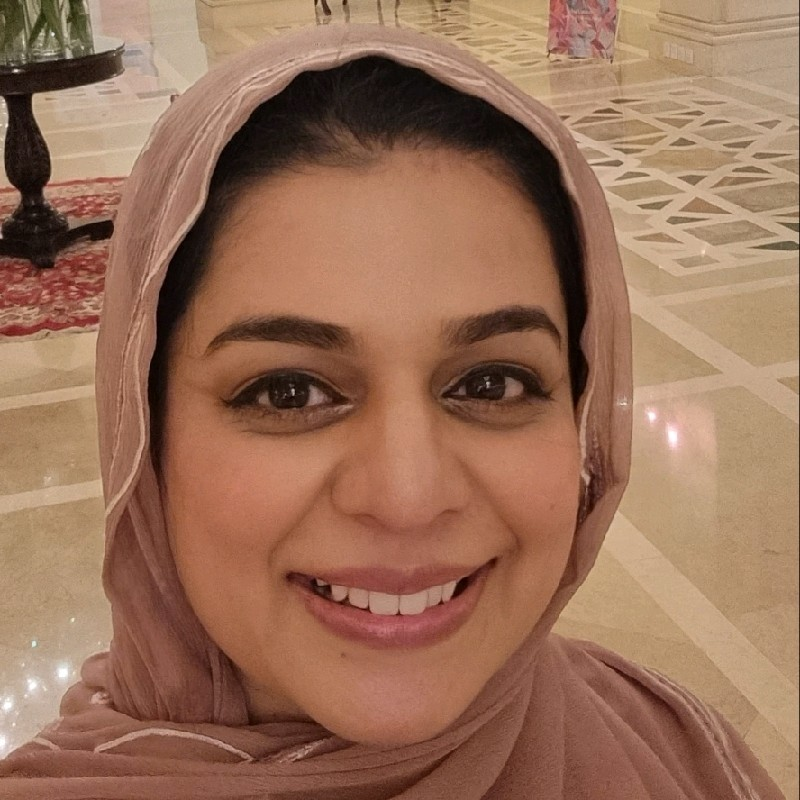

Organizer · attending in person
Usman Naseem
Macquarie University
Sydney, Australia
Fifth International Workshop
A meeting place for researchers building safer, fairer, and more responsible multimodal systems.
Co-located with The Web Conference 2027
Why MM4SG
Images, video, text, audio, and platform signals now travel together. Their combination creates new opportunities for public benefit—and difficult questions around misinformation, abuse, bias, privacy, safety, and accountability.
Recent advances in large language and multimodal foundation models also make realistic fabricated content easier to create, placing new pressure on the authenticity and credibility of digital platforms.
MM4SG brings together researchers from natural language processing, computer vision, machine learning, computational social science, human-centered computing, and ethics to exchange ideas, share cutting-edge research, and develop robust content-analysis techniques.
Shaping the Future of Multimodal Content Safety — Join Us! #MM4SG2027
Tentative call for papers
We invite original contributions on a wide range of topics related to multimodal content analysis for social good, including but not limited to:
Timeline
All deadlines will use Anywhere on Earth (AoE) unless stated otherwise.
Paper submission
To be announcedAuthor notification
To be announcedCamera-ready
To be announcedWorkshop
One half-day during 10–11 May 2027 TentativeProgram
The detailed program, accepted papers, invited talks, and registration information will be added as they are confirmed.
Workshop team
Researchers working across natural language processing, multimodal learning, social computing, online safety, and responsible AI.
Organizer · attending in person
Macquarie University
Sydney, Australia

Program committee
The MM4SG 2027 program committee will be published after invitations are confirmed.
Invited speakers
Speaker information will be added once invitations and participation are confirmed.
Our history
From Singapore to Dublin: five workshops advancing multimodal research for social good.
Stay in the loop
Follow MM4SG on X for workshop announcements, or contact the workshop team with questions.